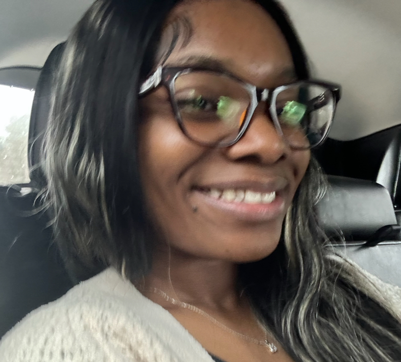

ABOUT

Hi! My name is Daijah McDonald, and I would like to introduce myself. I am a first generation college student. I am currently a junior here at KSU. My major is Information Technology. I chose this as my major because creating websites has always been so satisfying to me, specifically putting in the work and seeing the final product be so aesthetic.
So far, I have recieved my Associate's Degree in Information Technology at Gordon State College. I transferred to KSU in the Fall of 2024.My experience in college has been unique.
My goals include being a Web Developer, and eventually being an IT Project Manager. I see myself leading a team and foreseeing major projects.
Thank you for "listening" to my story!